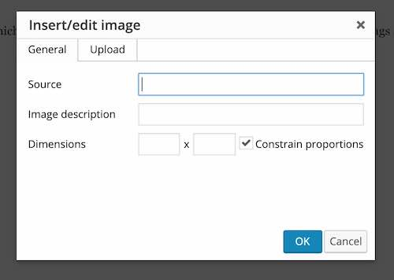

Hopefully most of the buttons are self-explanatory; this is a document editor not unlike Google Docs and exactly like a typical Wordpress blog editor. If you need a reference for the button functions, see the visual editor documentation (this link opens in a new window).
You should be able to paste in rich formatted content form any web page, MS Word document, or Google document. Most basic structural elements will be preserved such as headings, lists, bold, italic, hypertext links. Most other specific text formatting will be stripped clean. You may have to clean up some extraneous white space.
You can upload images by clicking the Insert Image button on the editor.
Next, click the Upload tab. From here you can click Browse for an Image select a file or drag and drop one to the area marked Drop and Image Here. The image will be uploaded immediately. When the upload is done, it's information will be listed and then click OK to insert into your editor.
For any image in the editor, click once to get the controls to align it or click the pencil tool to access more of the editing options (e.g. to add a caption or a URL to link from the image).You can also easily embed media from other web sites into your work simply by placing the web address for the media on a line by itself (do not hyperlink the media). This site uses the WordPress autoembed feature. This supports media from sites such as YouTube, vimeo, flickr, Instagram, Soundcloud, Twitter, Instagram, Giphy and many more (see the full list, link opens in new window)
For example, if we want to include a YouTube video writer Ian McKewan's advice for writers, we paste it's URL on a line by itself:
https://www.youtube.com/watch?v=Kyfe6DljGPY
which will produce in previews or when published, the embedded video:
Or, if we want to use a flickr image of a smiley icon on a piece of paper, we put it's URL on a blank line:
https://www.flickr.com/photos/8411190@N04/6036682072/
and when published by TRU Writer it will appear as:
Tweets work as well too, just enter the URL for a single tweet, say something about SPLOTs. Once more, enter the URL on a blank line:
https://twitter.com/cogdog/status/1110614384643133441
and when published by TRU Writer it will appear as:
FYI preview version of a TRU Writer SPLOT with improved front end editor (plus wider entry form) https://t.co/eN0NtxyFi5
— Alan Levine (@cogdog) March 26, 2019
Note that the media embeds will not display in the editor, but will be visible in previews and when published.